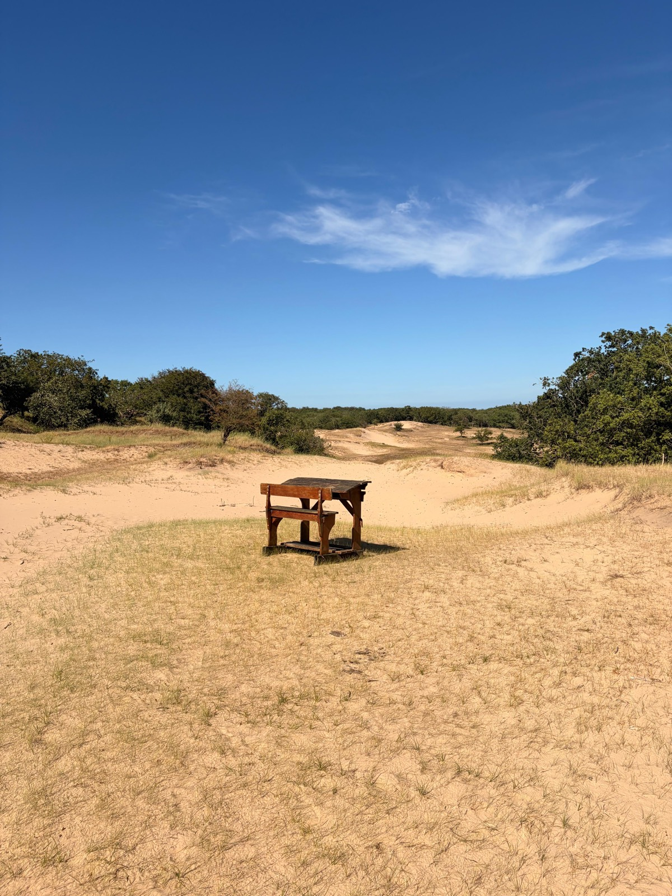
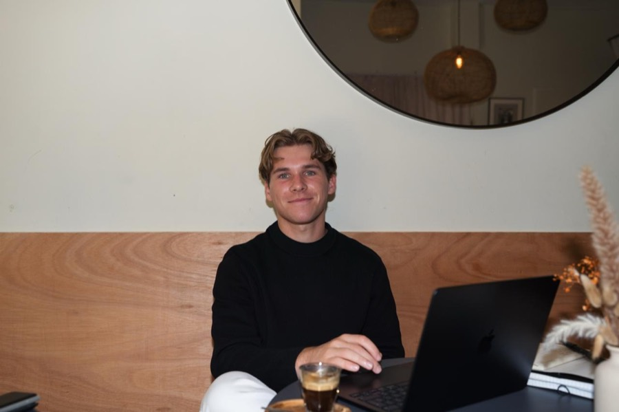
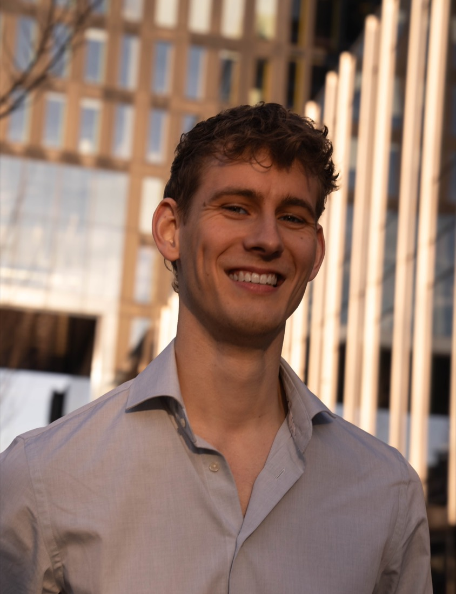
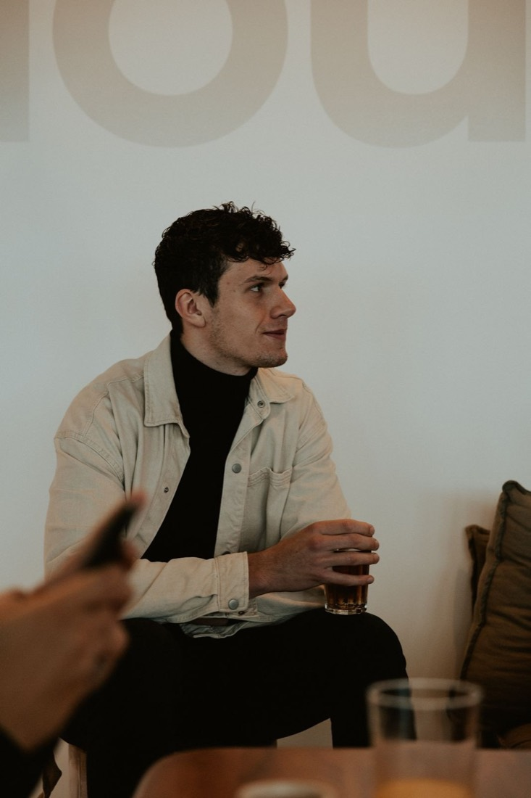
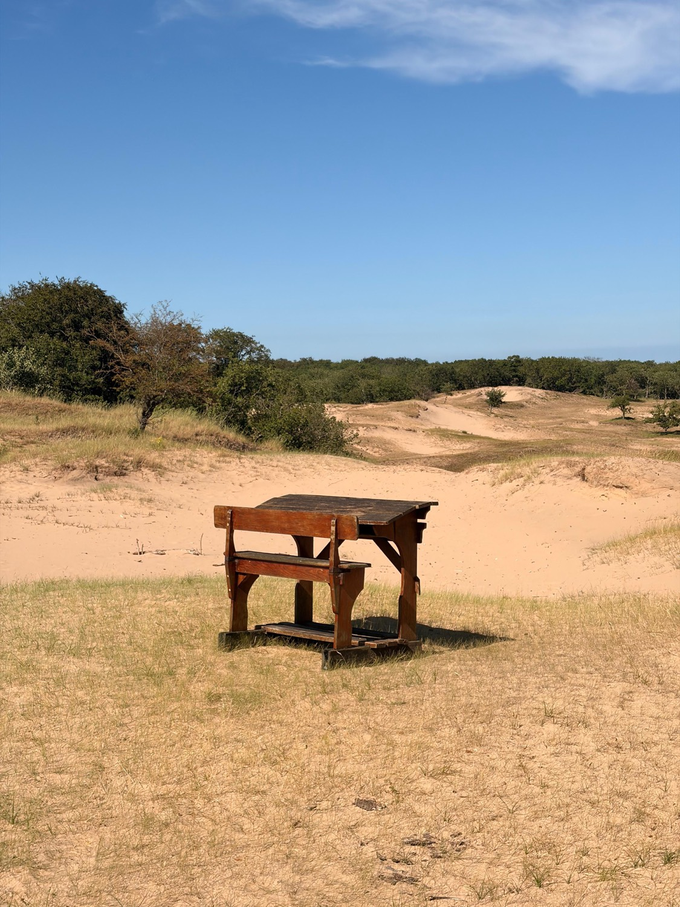

Gen Z groeit op met het scherm aan: altijd bereikbaar, nooit helemaal hier. Tegelijk lopen de mentale klachten onder jongeren hard op. De vraag die ons niet loslaat: kun je betere technologie voor mentale gezondheid maken juist door zelf even uit de hectiek te stappen?

Drie founders lopen de Camino, van Portugal naar Spanje, met slimme brillen op. Onderweg bouwen ze, alleen met hun stem, een app voor mentale gezondheid die af moet zijn als ze in Santiago aankomen.
We bouwen met de natuur om ons heen. Lopend, met een slimme bril en AI die we met onze stem aansturen. Juist door uit de hectiek te stappen, komen we terug bij bezinning. En tegelijk moet er een echte app komen te staan.
De precieze vorm bepalen we graag samen met NewBe. Wat ons betreft volgt de docu drie natuurlijke delen:
Drie vrienden uit Amsterdam. We bouwen allemaal mee, vertellen allemaal mee en houden samen het plan scherp. Waarom we dit doen: we willen laten zien dat technologie ons juist dichter bij onszelf kan brengen.



Mentale gezondheid gaat bijna altijd over wat er misgaat. Wij willen de andere kant laten zien: hoe technologie en bewustwording jongeren juist vooruit kunnen helpen. Daarom moet dit verhaal gehoord worden.
We maken een introductievideo waarin we ons verhaal vertellen, er geloven al partners in, en we werken samen met Stichting MIND. We zetten zelf iets neer, maar dit verhaal verdient een veel groter podium.

Wij hebben het verhaal, de toegang en de partners. Wat we missen, is de productiekracht om het naar een groot publiek te brengen. Daar komen jullie in beeld.
We vertellen het hele verhaal graag in een gesprek. De tocht is de laatste week van augustus, dus hoe eerder hoe beter.